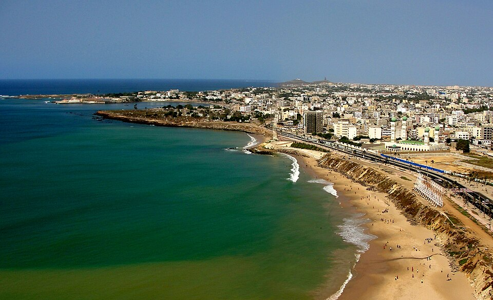
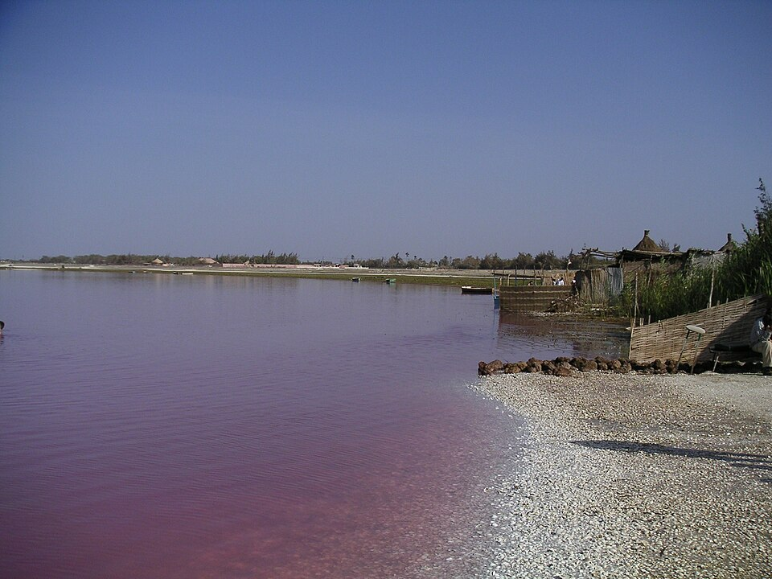
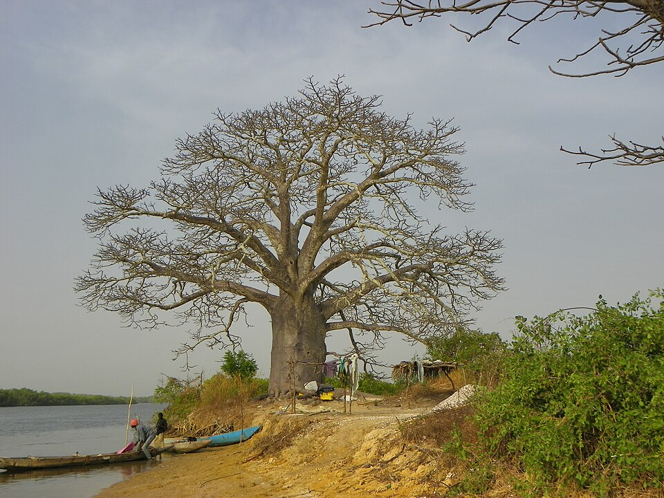

À ne pas manquer

Presqu'île du Cap-Vert
La capitale du Sénégal, dynamique et moderne, offre un mélange unique de tradition et de modernité.
En savoir plus
Région de Dakar
Célèbre pour ses eaux aux teintes particulières, le Lac Rose est une merveille naturelle du Sénégal.
En savoir plus
Sud du Sénégal
Une région verdoyante connue pour ses paysages, ses traditions et son accueil chaleureux.
En savoir plusPlages, lacs, forêts et savanes à couper le souffle.
Traditions, musique, gastronomie et artisanat.
Découvrir et préserver les richesses du Sénégal.